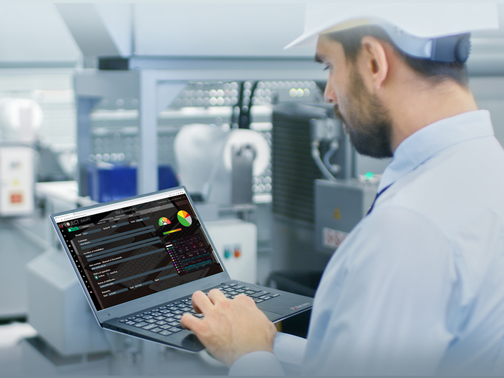

Guida completa verso la conformità normativa: valutazione dei rischi (UNI EN ISO 12100), calcolo del Performance Level (ISO 13849) e predisposizione del fascicolo tecnico per garantire la sicurezza del macchinario e la marcatura CE.

Progettare e costruire una macchina automatica significa assumersi la responsabilità legale dell'immissione sul mercato e della messa in servizio. Con l'evoluzione del quadro normativo europeo — dal passaggio dalla Direttiva Macchine 2006/42/CE al nuovo Regolamento Macchine (UE) 2023/1230 — la conformità della sicurezza deve essere integrata fin dalle prime fasi di progettazione (Safety by Design).
DUE.ZERO affianca gli Uffici Tecnici dei Costruttori con un servizio specialistico di Technical Compliance, trasformando l'adempimento normativo in un vantaggio competitivo.
Eseguiamo la valutazione iterativa dei rischi partendo dall'analisi dei modelli CAD 3D fino alla verifica diretta sul prototipo in fase di collaudo (FAT):
I nostri specialisti effettuano la verifica e la validazione dei sistemi di comando legati alla sicurezza. Utilizzando software dedicati come SISTEMA (Safety Integrity Software Tool), calcoliamo il livello di prestazione raggiunto (Performance Level - PL) per ogni funzione di sicurezza, garantendo che i componenti installati soddisfino i requisiti minimi richiesti dalla stima del rischio.